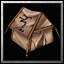
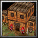

|

Command Tent 385  205
205

Trains: |
Roman Tent 80
20
|
Roman Tent 80
20
|

Roman Barracks 160
60
|
Roman Shipyard 160
60
Trains: |
|
Roman Temple 150
140
|
|
Triumphal Arch 160
40
|
| Tiers | Buildings | |||||
|---|---|---|---|---|---|---|
| Tier 1 |
|
|||||
| Tier 2 |
|
|||||
| Tier 3 |
|